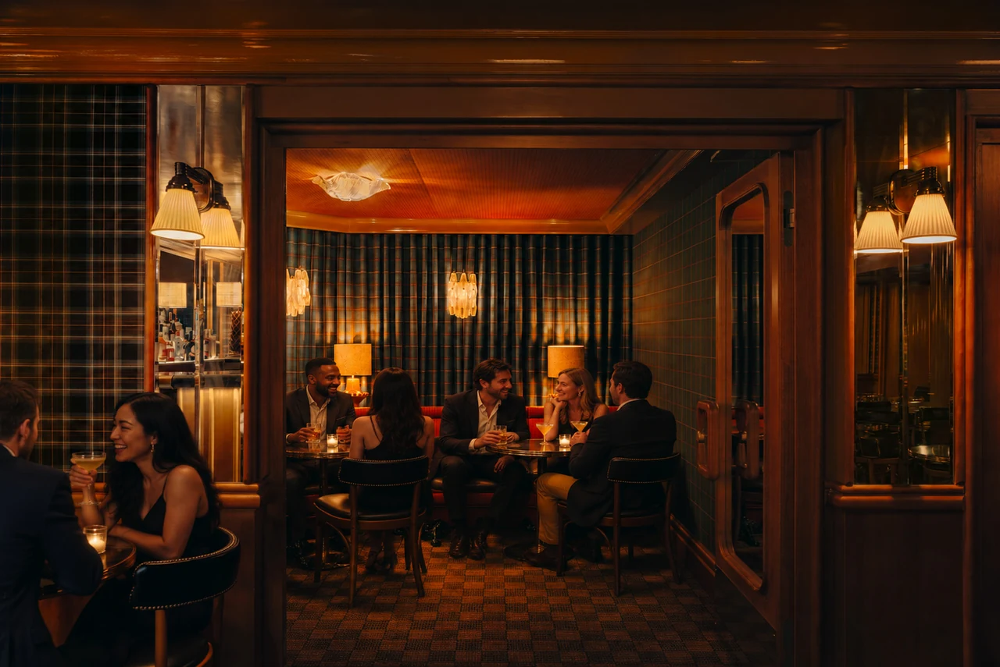
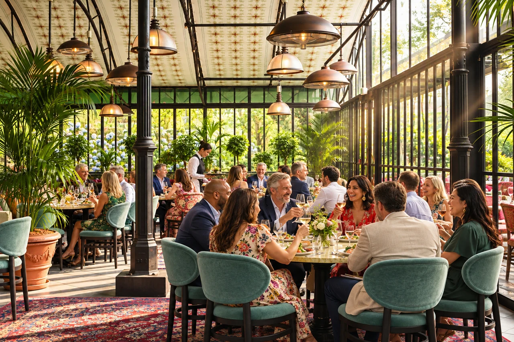

Commencer par l’objectif
Avant de chercher une date ou un lieu, posez la question qui guidera tous les choix : à quoi ce séminaire doit-il servir ? Lancer une nouvelle stratégie, réunir une équipe qui se voit peu, récompenser une belle année ou simplement prendre du recul ensemble. L’objectif fixe le ton, la durée, le budget, et jusqu’à la façon de disposer la salle.
Écrivez-le en une phrase et partagez-la avec les intervenants : elle évitera bien des hésitations au moment de bâtir le programme.
Une journée, ou deux ?
Une journée suffit pour une réunion de travail ou un point d’étape : matinée en plénière, ateliers l’après-midi, et un verre pour conclure. Deux jours laissent le temps de souffler, de mélanger les équipes et de prolonger par un dîner. Au-delà, pensez à alterner les temps de travail et les temps libres : l’attention baisse vite dans une salle fermée.
Le bon nombre de participants
Le nombre d’invités décide du lieu plus que tout le reste. Un comité de direction de dix personnes se sent bien dans un salon privé, autour d’une seule table ; une convention de deux cents personnes demande une salle en théâtre, des espaces pour les ateliers et un vestiaire. Comptez large au départ, et confirmez le chiffre une à deux semaines avant le jour J.

Choisir le lieu
Un séminaire réussi tient souvent à un lieu qui change du bureau : une brasserie historique pour la mémoire des lieux, une verrière pour la lumière du jour, une barge sur la Seine pour l’effet de surprise. Visitez si vous le pouvez, aux heures où vous serez là : la lumière, le bruit et la circulation ne sont pas les mêmes à 9 heures et à 18 heures.
Notre équipe vous propose les maisons qui s’y prêtent et organise les visites, avec un seul interlocuteur pour toutes.
Penser à l’accès
Vos invités viennent de partout : choisissez une adresse simple à rejoindre en transports en commun, et précisez dans l’invitation la station la plus proche, le parking s’il y en a un et l’heure d’accueil. Pour un séminaire hors de Paris, un car au départ d’un point de rendez-vous évite bien des retards.
Les espaces et le matériel
Listez ce dont vous avez besoin : salle plénière, salles d’ateliers, espace pour les pauses, écran, micros, connexion. Demandez la disposition possible pour votre nombre d’invités (en théâtre, en classe, en îlots) et réservez un temps d’installation et de répétition avant l’arrivée des participants.

Construire le programme
Un bon programme alterne les formats : une plénière courte pour lancer la journée, des ateliers en petits groupes, des temps d’échange plus libres. Gardez les sujets les plus exigeants pour le matin et prévoyez une marge de quinze minutes entre chaque séquence : elle sera toujours utilisée.
Les pauses et les repas
Ce sont souvent les moments dont on se souvient. Un petit-déjeuner d’accueil met tout le monde à l’aise ; un déjeuner léger, assis ou en buffet, évite le coup de fatigue de l’après-midi. Prévenez-nous des régimes particuliers et des allergies dès l’inscription : nos chefs adaptent les menus, avec toujours une proposition végétarienne.
Prolonger par une soirée
Un dîner ou un cocktail en fin de journée transforme un séminaire en souvenir commun. Il peut se tenir sur place ou dans une autre de nos maisons, à quelques minutes à pied. Dites-nous l’ambiance que vous imaginez : nous vous proposons le lieu, le menu et le déroulé, jusqu’au dernier verre.